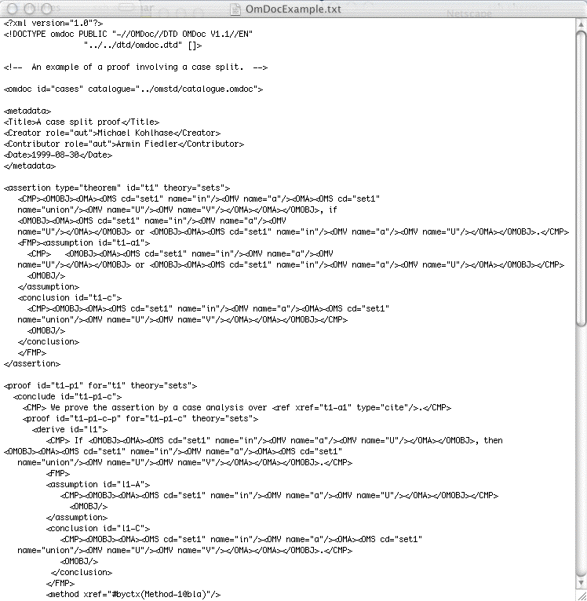

Syntax Goals

Aims and Constraints
- Expressive enough for all problems and formats
- Expressive enough for solutions with postprocessing
- Common problem and solution language
- Arbitary annotations
- Easy for humans to read and write
- Using a plain text editor
- Compact
- Easy for programs to parse.
- Backward compatible with TPTP syntax
- Extensible
- Local context and semantics
Human and Programmed Users
- Humans interact with
- Problems
- Intermediate data
- Solutions
- Machine-only syntaxes ignore the human user
- Make the machines work, not the people